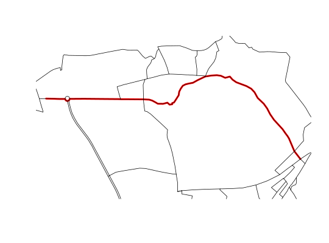

Summarise shortest path between nodes on network
sum_network_routes(sln, start, end, sumvars, combinations = FALSE)
| sln | The SpatialLinesNetwork to use. |
|---|---|
| start | Node ID(s) of route starts. |
| end | Node ID(s) of route ends. |
| sumvars | Character vector of variables for which to calculate summary statistics. |
| combinations | Boolean value indicating if all combinations of start and ends should be calculated. If TRUE then every start Node ID will be routed to every end Node ID. This is faster than passing every combination to start and end. Default is FALSE. |
Find the shortest path on the network between specified nodes and returns a SpatialLinesdataFrame containing the path(s) and summary statistics of each one.
data(routes_fast) rnet <- overline(sldf = routes_fast, attrib = "length") SLN <- SpatialLinesNetwork(rnet) weightfield(SLN) # field used to determine shortest path#> [1] "length"shortpath <- sum_network_routes(SLN, 1, 50, sumvars = "length") plot(shortpath, col = "red", lwd = 4)plot(SLN, add = TRUE)